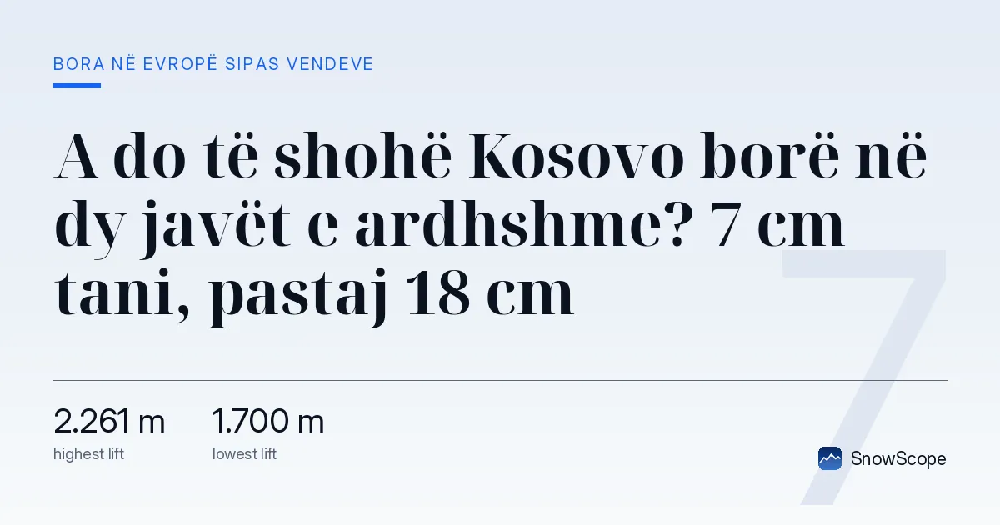

A do të shohë Kosovo borë në dy javët e ardhshme? 7 cm tani, pastaj 18 cm
Kosovo do të shohë borë të konsiderueshme gjatë dy javëve të ardhshme, por modeli ndahet ndjeshëm. Modeli ynë parashikon deri 7 cm në javën e parë dhe deri 18 cm në javën e dytë (24-30 nëntor), me borën kryesore që mbërritet nga 20 nëntorit dhe kulmon rreth 21 nëntorit dhe përsëri nga 24 nëntorit e tutje.
Shihni parashikimin e borës për Brezovica në aplikacionin SnowScopeTrashësia e borës, njoftime dhe harta 3D, falas.
Java e parë e lehtë, java e dytë e rëndë
Katërmbëdhjetë ditët e ardhshme ndahen në dy regjime bore të dallueshme. Java e parë, deri më 23 nëntor, është relativisht e thatë: modeli ynë tregon deri 7 cm borë të re në ardhje. Java e dytë, nga 24 deri 30 nëntor, bëhet shumë më e lagësht, me modelin tonë që parashikon deri 18 cm. Kjo është një perspektivë e modeluar për malësinë e Kosovës mbi 2000 metra; zonat më të ulëta do të shohin më pak borë ose aspak.
Koha ka rëndësi. 21 nëntor shënon ditën e parë të borës të rëndësishme këtë javë. Pastaj vijon një periudhë e thatë. Ngjarja kryesore fillon më 24 nëntor dhe vazhdon deri në fund të muajit, kur besimi i modelit është mjaft i lartë. Pas 1 dhjetorit, pasiguria rritet, pasi modelet e ndryshme të motit nuk pajtohen më shumë për atë që vjen pas.
| Qendra | Trashësia e borës | Borë e re, 72 orë | Ditët në vijim | Maja |
|---|---|---|---|---|
| Brezovica | 2 cm | 8 cm | 0 cm | 2.261 m |

I thatë deri më 20 nëntor, pastaj fillon akumulimi i borës
Parashikimi i menjëhershëm është i thjeshtë: asnjë borë e re për tre ditët e ardhshme. Deri më 19 nëntor, modeli ynë tregon akumulim zero në të gjithë Kosovën. Bora fillon të bjerë më 20 nëntor. 21 nëntor sjell pulsimin e parë të vërtetë—rreth 5 cm borë të re është modeluar, edhe pse kjo do të koncentrohet në terrenet më të larta. Deri më 23 nëntor, java e parë mbyllet me rreth 7 cm total në kulmet.
Kjo është borë e lehtë për një vend malor. Në Brezovica, stacioni i vetëm i madh i Kosovës (në 2261 m), vetëm 8 cm u akumulua në 72 orët e fundit pavarësisht se ndodhet në tokë më të lartë. Kjo tregon se sa e hollë do të jetë bora e javës së parë: sezon i hershëm, sisteme të dobëta, shkrirje e shpejtë në çdo lartësi nën vijën e borës.

Mbulesa e borës kërceu 50 km² në një ditë
Zona e mbuluar me borë në Kosovë u rrit ndjeshëm djeu: nga 70 km² në 120 km² sot, një fitim prej 50 km². Kjo rritje pasqyron 5 cm të borës maksimale të re që ra nëpër malet në 72 orët e fundit. Megjithatë, konteksti ka rëndësi—këto 120 km² përfaqësojnë vetëm 2 për qind të 7040 km² totale që modeli ynë mbulon. Pothuajse i gjithë Kosova mbetet i zhveshur.
Malet e Lumërimit dhe Malet e Sharrit kapën shumicën e borës të fundit. Malet e Lumërimit morën 37 cm në tre ditët e fundit, shumë më i larta numri. Malet e Sharrit morën 13 cm. Këto janë makinat e borës të Kosovës në këtë periudhë, por edhe bora e tyre është e hollë krahasuar me dimrat e kaluar dhe e koncentruar vetëm në kulmet më të larta. Nën vijën e borës në 2100 metra, shkrirja e shpejtë është tashmë në kurse.
Kushtet më të mira: vargjet e larta, dhe më vonë këtë muaj
Nëse dëshironi borë në tokë sot, Malet e Lumërimit dhe Malet e Sharrit janë opsionet tuaja të vetme realistike në Kosovë. Kudo tjetër janë vetëm shkëmb të zhveshur dhe bar. Në stacionin Brezovica, thellësia është vetëm 2 cm—pothuajse pa gjurmë—edhe pse Brezovica ndodhet në 2261 metra. Ky është sezon i hershëm në thellësinë e tij më të vogël. Shkëmbet shfaqen gati kudo. Situata do të përmirësohet ndjeshëm nga 24 nëntor e tutje, kur bora e javës së dytë mbërritet.
Koha e javës së dytë është e rëndësishme. Nëse keni data udhëtimi fleksibël, planifikoni për 24-30 nëntor. Atëherë modeli ynë pret borën më të rëndë. Nëntor i hershëm (deri më 23) nuk ia vlen udhëtimin. Mesi-fundi i nëntorit është kur sezoni i skive të Kosovës fillon në mënyrë efektive.
Lartësia rregullon borën: asgjë nën 2100 m sot
Vija e borës sot është në 2100 metra. Nën këtë, malet janë plotësisht pa borë. Nga 2000 në 2500 m—zona ku ndodhet bora më e mirë—thellësia mesatare e matur është vetëm 2 cm, duke mbuluar 57 për qind të asaj zone në copëza të shpërndarë. Nga 500 në 2000 metra poshtë, nuk ka borë. Ky është nëntor i hershëm klasik: bora arrin vetëm kulmet më të larta.
Lartësia do të përcaktojë përvojën tuaj. Nëse qëndroni mbi vijën e borës në 2100 metra ose më lart, keni mundësinë të gjeni borë të hollë dhe një përzierje borë me tokë të zhveshur. Nëse zbritni nën 2100 metra, jeni në bar dhe shkëmb. Me ardhjen e borës së javës së dytë, presim që vija e borës të bjerë ndjeshëm, duke lejuar që akumulimi në Brezovica dhe vendndodhjet e ngjashme me lartësi të mesme të fillojë seriozisht.
Këshilla për skiatorët
- Kontrolloni Malet e Lumërimit dhe Malet e Sharrit nëse jeni duke ndjekur borën e hershme—ato kulme mbajnë akumulimin e parë të vërtetë të sezonit.
- Planifikoni çdo tur ski për 24 nëntor ose më vonë, kur vala e dytë mbërritet; nëntor i hershëm është shumë marginal.
- Para se të shkoni jashtë pistës ose në terrene jashtë fushe, rishikoni bulltenin zyrtar të ortakeve për Kosovën.
- Monitoroni motën nga 24 deri 30 nëntor: atëherë pritet bora më e rëndë, dhe dukshmëria mund të bjerë ndjeshëm.
- Erëra të forta shpesh ndjekin sistemet e borës; qëndroni vigjilent për ndryshime të kushteve dhe shpatet e mbingarkuara nga era.
About these numbers
Resort snow depths are the deepest snow on the resort's upper slopes from the SnowScope snow model (about 1 km, run of 16 nëntor); they are estimates for an area, not a measurement at one point. Station values are measurements on the date shown. Forecasts can change. Always read the official avalanche bulletin before going off-piste.
Cite this report
For research, teaching or the press: the numbers and charts are free to reuse under CC BY 4.0 with this citation.
SnowScope (2026), A do të shohë Kosovo borë në dy javët e ardhshme? 7 cm tani, pastaj 18 cm, https://snowscope.app/blog/sq/2026/11/kosovo-snow-report-16-november-2026.html, accessed 2026-11-16
SnowScope (Atlas Labs). (2026, November 16). A do të shohë Kosovo borë në dy javët e ardhshme? 7 cm tani, pastaj 18 cm. SnowScope snow reports. https://snowscope.app/blog/sq/2026/11/kosovo-snow-report-16-november-2026.html
BibTeX
@misc{snowscope2026kosovosnowreport16novemb,
author = {{SnowScope (Atlas Labs)}},
title = {A do të shohë Kosovo borë në dy javët e ardhshme? 7 cm tani, pastaj 18 cm},
year = {2026},
month = nov,
howpublished = {\url{https://snowscope.app/blog/sq/2026/11/kosovo-snow-report-16-november-2026.html}},
note = {Published 2026-11-16 20:42 UTC; accessed 2026-11-16}
}· CC BY 4.0 · Methods, data and tools →
Brezovica: snow and temperature by height, this winter vs last (tools) →
Follow Brezovica
Falas: një mesazh kur vjen borë e re dhe parashikimi çdo mëngjes.